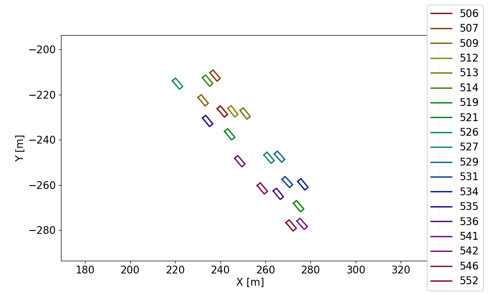
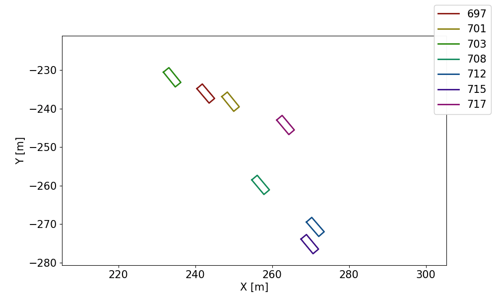

This project demonstrated the usage of clustering algorithm to automatically extract racing battles from racecar telemetry data. The purpose is to automatically generate segments of interest from all available data and provide them as datasets for detailed analysis. This eliminates the need to manually select data segments and reduces data analysis efforts on out-of-interest data. The framework utilized a couple of hyperparameters which are interpretable with respect to the racing battle definition, such as the distance between cars that are currently battling with each other.
 